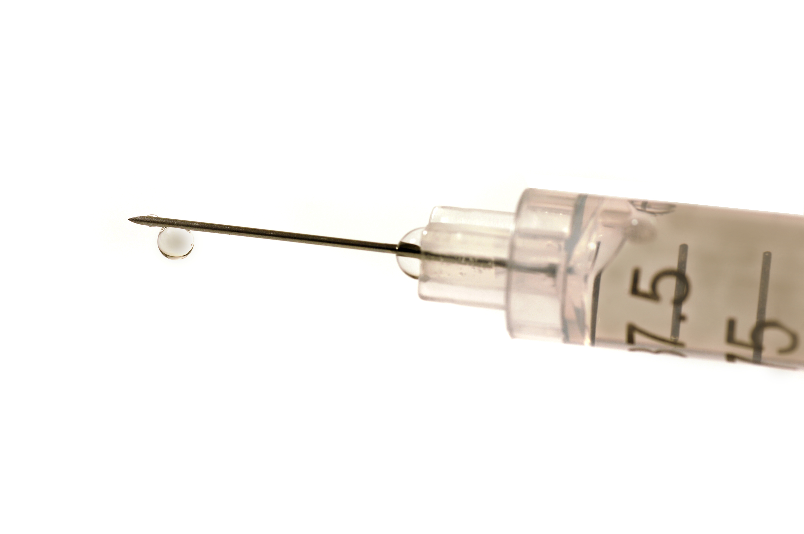

The HPV Vaccine
Promoting promiscuity or preventing cancer?
Elizabeth Koo
Fall 2007

Dramatically reducing one’s risk for cancer, let alone preventing
cancer with a simple vaccine, might seem to be a dream of the future.
However, a new vaccine manufactured by Merck and Co. promises to do
just that. Approved by the Food and Drug Administration (FDA) in June
2006, Gardasil® is the first vaccine to prevent cervical cancer, which
ranks as the second most common form of cancer in women worldwide with
470,000 new cases and 233,000 deaths a year.
As a possible preventative method against a cancer
widely prevalent in women across the globe, Gardasil® is marketed as a
product capable of blocking 99 percent of infections by the two strains
of human papillomavirus (HPV) that cause 70 percent of all cervical
cancers as well as most cases of genital warts. The vaccine, now
recommended for girls ages 11 and 12 by the Advisory Committee on
Immunization Practices, can be administered in three doses over a
period of six months. The vaccine can also be given to girls 9-18 years
old and is approved for women up to 26 years old.
Nevertheless, this potent vaccine has recently
sparked much controversy. In February 2007, Texas became the first
state to take political action with the HPV vaccine when Governor Rick
Perry made it mandatory for all sixth grade girls in Texas to receive
the vaccine, beginning in September 2008. While some believe that
requiring young girls to receive the vaccine is an effective strategy
to “help reduce the burden of cervical cancer,” as stated by Merck, the
idea of a state mandate worries many. Parents and politicians are
opposed to this aggressive approach as they fear that
government-mandated vaccination for a sexually transmitted disease
might promote teenage sexual promiscuity. Because Gardasil® is most
effective for those not yet exposed to HPV, supporters of the vaccine
find it ideal for girls to be vaccinated before they become sexually
active.
Furthermore, those opposing the idea of
state-mandated vaccination feel that the government is threatening the
rights of parents to teach sexual abstinence and to decide whether or
not their children should be vaccinated. Also, many are hesitant to
embrace the vaccine because of the lack of safety testing that has been
conducted. Although doctors assert that Gardasil®’s side- effects are
essentially limited to fever, nausea, dizziness, and pain at the
injection sight, cautious parents and politicians point to the
possibility of unforeseen complications and long-term side effects.
The cost of the vaccine at $360 for the series of
three shots has parents, doctors, and politicians concerned about the
limited accessibility of the vaccine. With Gardasil® being one of the
most expensive vaccines ever manufactured, many are also apprehensive
about the financial burden that state- mandated vaccination would place
on the parents of young girls.
Following Texas’s lead, many other states have begun
to consider similar legislation. Supporters of the mandated vaccination
view the action as an opportunity to prevent cancer and save the lives
of countless women. However, while Gardasil® is a new and promising
method of preventing cervical cancer, it remains controversial for
potentially unforeseen medical complications and the implications of
complicity toward adolescent sexual behavior that mandated vaccination
may create.
About the Author
Elizabeth Koo is a third year Molecular and Cell Biology major who hopes to pursue a career in health care.